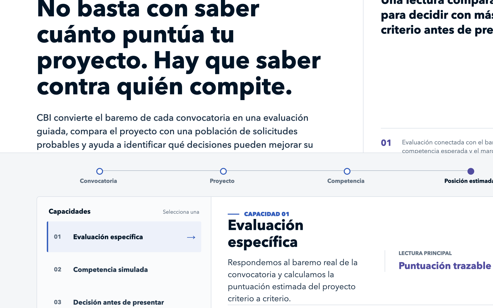
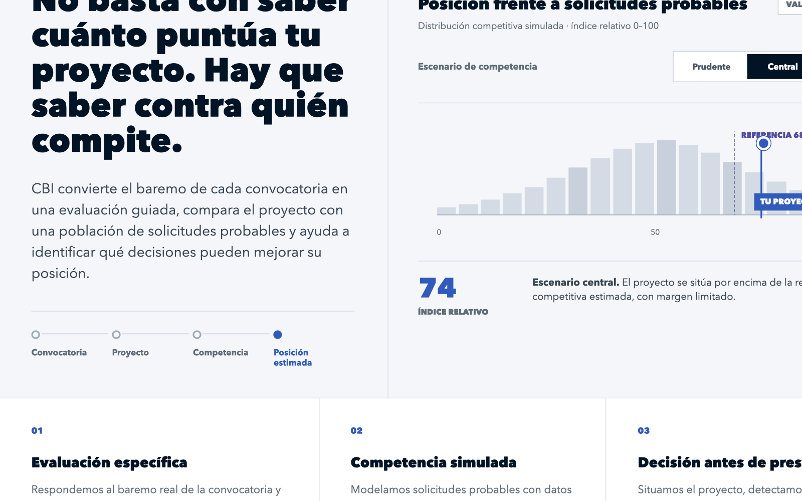
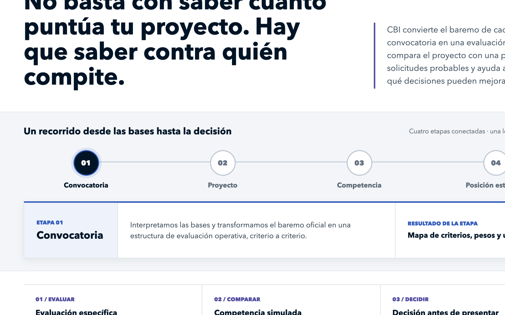

OPCIÓN A
Abrir versión interactiva
Panel editorial
La alternativa más sobria. Organiza las capacidades de CBI en un selector interactivo y mantiene el discurso comercial en primer plano.
Las tres propuestas comparten el mismo contenido. Cambia la manera de explicar la evaluación, la competencia simulada y la posición estimada del proyecto.

La alternativa más sobria. Organiza las capacidades de CBI en un selector interactivo y mantiene el discurso comercial en primer plano.

La alternativa más diferencial. El protagonista es el lugar del proyecto dentro de una distribución de solicitudes probables.

La alternativa más explicativa. Muestra cómo CBI avanza desde las bases de la convocatoria hasta una posición competitiva estimada.